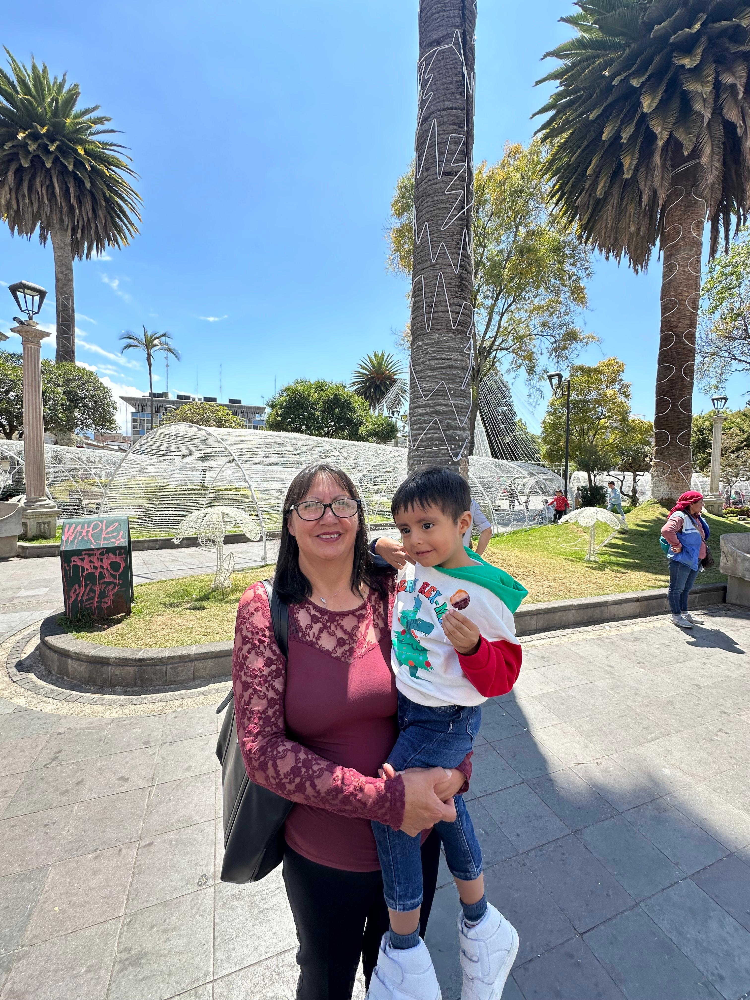
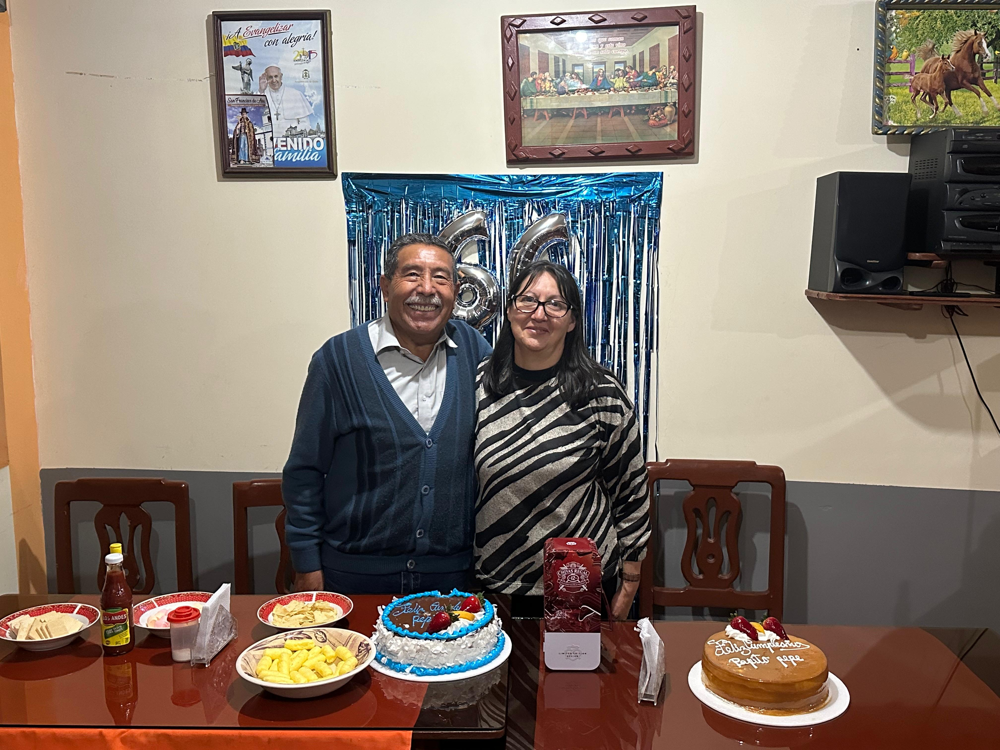
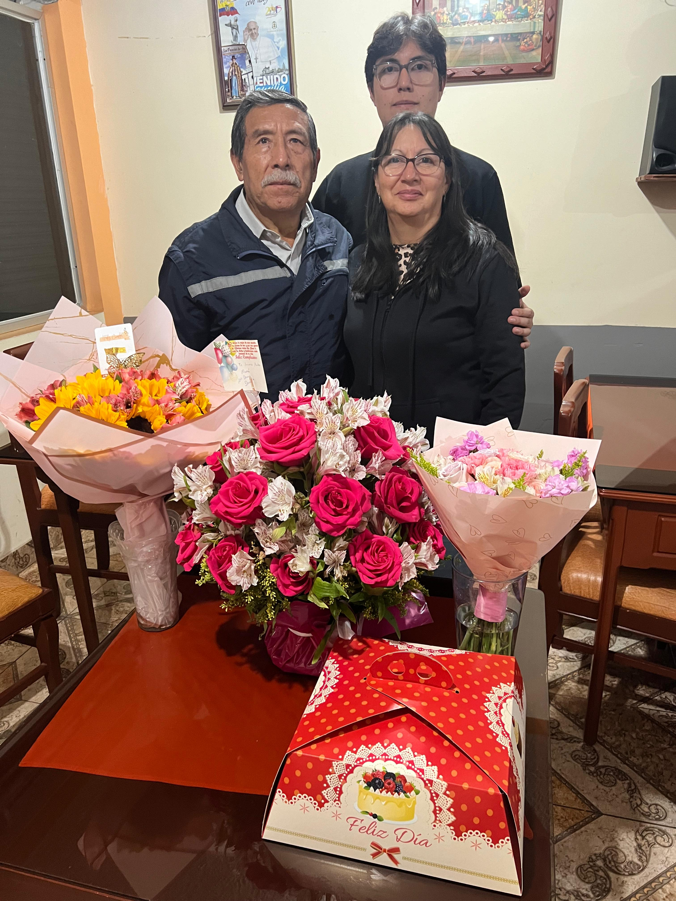
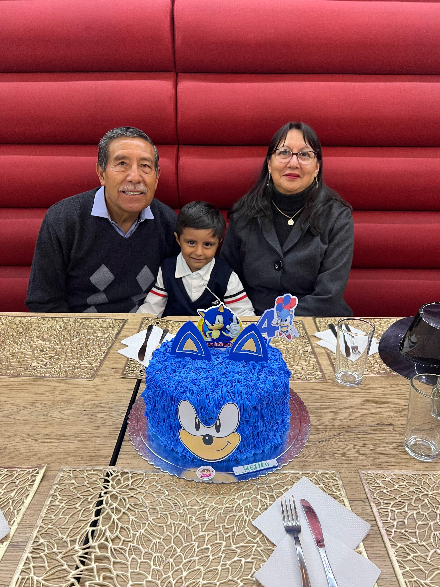
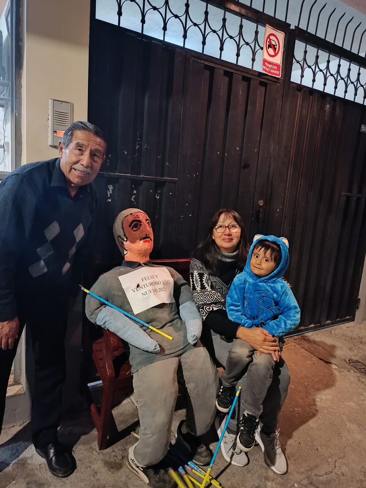
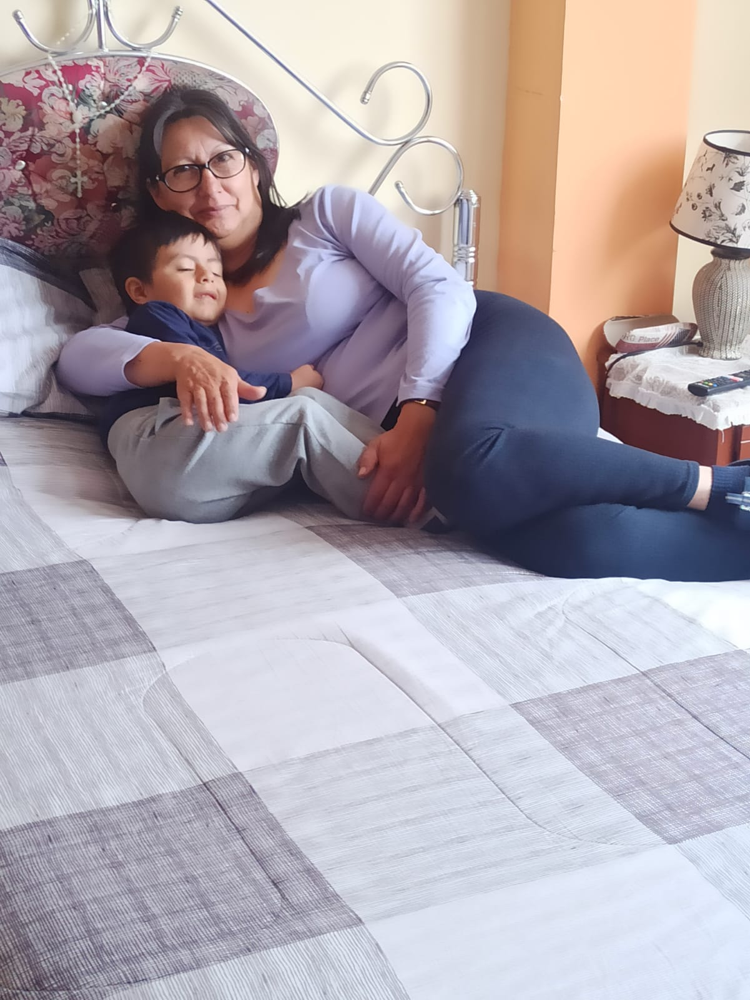
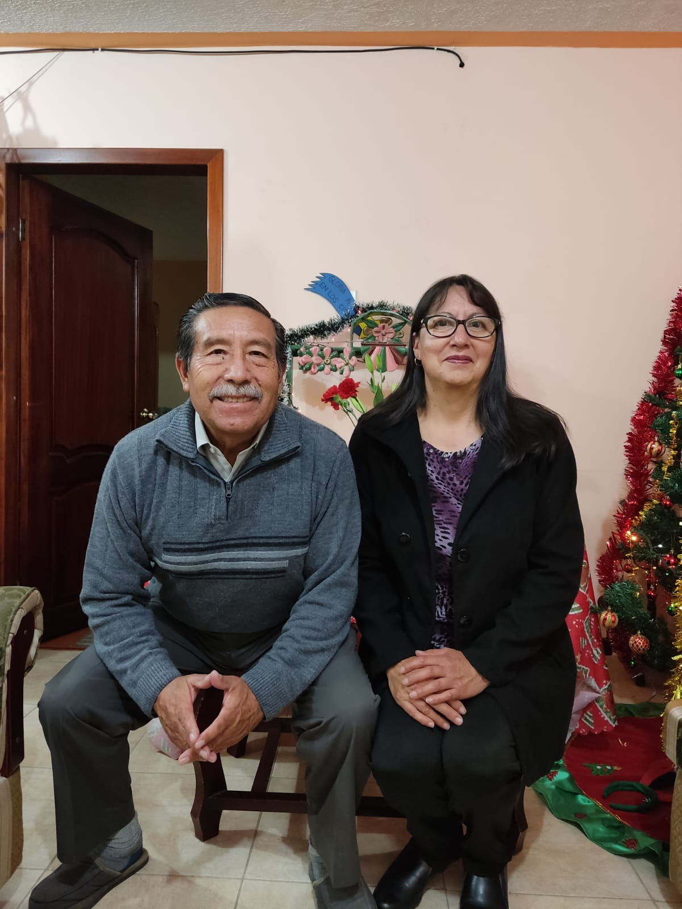

Gracias por ser la luz que guía mi vida, por tu amor incondicional y por enseñarme con tu ejemplo el verdadero significado de la fortaleza, el cariño y la entrega. Te amo muchísimo madrecita. 💖







×
Letra traducida – "House of Gold"
Ella me preguntó: Hijo, cuando me haga mayor She asked me: Son, when I grow old
¿Me comprarás una casa de oro? Will you buy me a house of gold?
Y cuando tu padre se convierta en piedra And when your father turns to stone
¿Te ocuparás de mí? Will you take care of me?
Ella me preguntó: Hijo, cuando me haga mayor She asked me: Son, when I grow old
¿Me comprarás una casa de oro? Will you buy me a house of gold?
Y cuando tu padre se convierta en piedra And when your father turns to stone
¿Te ocuparás de mí? Will you take care of me?
Te haré reina de todo lo que ves I will make you queen of everything you see
Te pondré en el mapa I'll put you on the map
Te curaré de la enfermedad I'll cure you of disease
Y si nos levantamos y dejamos este pueblo Let's say we up and left this town
Y volvemos nuestro futuro del revés And turned our future upside down
Fingiremos que tú y yo We'll make pretend that you and me
Vivimos felices después de todo Lived ever after happily
Ella me preguntó: Hijo, cuando me haga mayor She asked me: Son, when I grow old
¿Me comprarás una casa de oro? Will you buy me a house of gold?
Y cuando tu padre se convierta en piedra And when your father turns to stone
¿Te ocuparás de mí? Will you take care of me?
Te haré reina de todo lo que ves I will make you queen of everything you see
Te pondré en el mapa I'll put you on the map
Te curaré de la enfermedad I'll cure you of disease
Y desde que sabemos que los sueños están muertos And since we know that dreams are dead
Y la vida vuelve los planes en nuestra contra And life turns plants up on their head
Planearé ser un vagabundo I will plan to be a bum
Así quizás consiga llegar a ser alguien So I just might become someone
Ella me preguntó: Hijo, cuando me haga mayor She asked me: Son, when I grow old
¿Me comprarás una casa de oro? Will you buy me a house of gold?
Y cuando tu padre se convierta en piedra And when your father turns to stone
¿Te ocuparás de mí? Will you take care of me?
Te haré reina de todo lo que ves I will make you queen of everything you see
Te pondré en el mapa I'll put you on the map
Te curaré de la enfermedad I'll cure you of disease
Para tí madrecita hermosa 💖
Te agradecemos infinitamente por todo lo que has hecho por nuestra familia.
Eres el pilar que nos sostiene, la fuerza que nos impulsa a seguir. Perdónanos por cada enojo,
por cada preocupación que te hemos causado. Gracias por estar siempre ahí, incluso en medio de nuestros errores.
Agradecemos cada uno de tus consejos, tu paciencia y tu sabiduría. Sin ti, nuestra vida estaría incompleta.
Eres la luz de nuestros ojos, y cada día es un homenaje a ti, porque gracias a tu amor y fortaleza
seguimos luchando por nuestros sueños.
Eres lo más importante para nosotros. Gracias por darnos la vida y por enseñarnos a vivirla con valor.
Te amamos profundamente, madre querida. Siempre estaremos a tu lado.